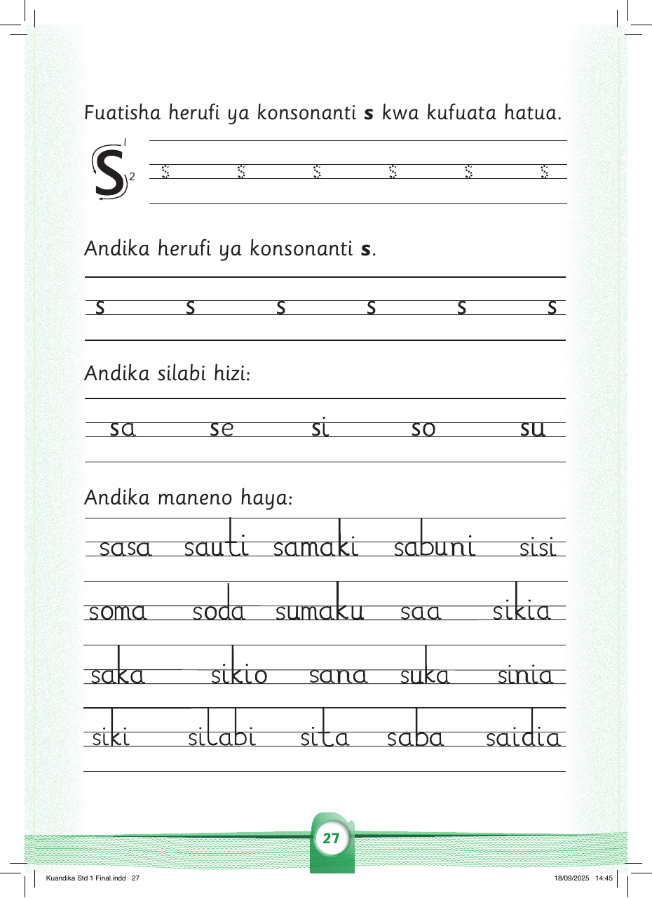

Fuatisha herufi ya konsonanti s kwa kufuata hatua.
s s s s s s
Andika herufi ya konsonanti s.
s
s
s
s
s
s
Andika silabi hizi:
sa
se
si
so
su
Andika maneno haya:
sasa
sauti
samaki
sabuni
sisi
soma
soda
sumaku
saa
sikia
saka
sikio
sana
suka
sinia
siki
silabi
sita
saba
saidia